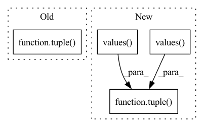

Pattern ID :37617
Before Change
script_module = torch.jit.script(model)
else:
dummy_input = get_torch_tensor(dataloader)
script_module = torch.jit.trace(model, tuple( t.to(target_device) for t in sample_to_tuple(dummy_input)) )
torch.jit.save(script_module, exported_model_path.as_posix())
After Change
if self.target_jit_type == JitType.SCRIPT:
script_module = torch.jit.script(model)
else:
dummy_input = tuple(
torch.from_numpy(val.astype(spec.dtype)).to(target_device)
for (val, spec) in zip(profiling_sample.values(), input_metadata.values())
)
script_module = torch.jit.trace(model, dummy_input)
torch.jit.save(script_module, exported_model_path.as_posix())
In pattern: SUPERPATTERN
Frequency: 3
Non-data size: 4
Instances Fragment ID: 108142370
Project Name: triton-inference-server/model_navigator
Commit Name: 1fb19ee11e4de51157ee2d846fe1a8ee633202e9
Time: 2022-02-24
Author: ptarasiewicz@nvidia.com
File Name: model_navigator/framework_api/commands/export/pyt.py
M Class Name: ExportPYT2TorchScript
N Class Name: ExportPYT2TorchScript
M Method Name: __call__(7)
N Method Name: __call__(6)
M Parent Class: Command
N Parent Class: Command
M File Name: model_navigator/framework_api/commands/export/pyt.py
N File Name: model_navigator/framework_api/commands/export/pyt.py
M Start Line: 57
M End Line: 58
N Start Line: 50
N End Line: 67
Before Change
outputs = model(inputs)
if isinstance(outputs, tuple):
outputs = torch.cat(outputs)
fx_outputs = tuple(fx_model(inputs).values() )
if isinstance(fx_outputs, tuple):
fx_outputs = torch.cat(fx_outputs)
assert torch.all(fx_outputs == outputs)After Change
outputs = torch.cat(outputs)
model = _create_fx_model(model)
fx_outputs = tuple( model(inputs).values())
if isinstance(fx_outputs, tuple):
fx_outputs = torch.cat(fx_outputs)
assert torch.all(fx_outputs == outputs) Fragment ID: 108142372
Project Name: feng-lab/pytorch-image-models
Commit Name: 9b3519545d6bf901047dccd24832793c95919cd4
Time: 2021-11-19
Author: rwightman@gmail.com
File Name: tests/test_models.py
M Class Name: AnonimousClass
N Class Name: AnonimousClass
M Method Name: test_model_forward_fx(2)
N Method Name: test_model_forward_fx(2)
M Parent Class:
N Parent Class:
M File Name: tests/test_models.py
N File Name: tests/test_models.py
M Start Line: 320
M End Line: 348
N Start Line: 348
N End Line: 360
Before Change
tracer_kwargs={"leaf_modules": list(_leaf_modules), "autowrap_functions": list(_autowrap_functions)})
inputs = torch.randn((batch_size, *input_size))
outputs = tuple(model(inputs).values() )
if isinstance(outputs, tuple):
outputs = torch.cat(outputs)
outputs.mean().backward()
for n, x in model.named_parameters():After Change
model.train()
model = _create_fx_model(model, train=True)
outputs = tuple( model(torch.randn((batch_size, *input_size))).values())
if isinstance(outputs, tuple):
outputs = torch.cat(outputs)
outputs.mean().backward()
for n, x in model.named_parameters(): Fragment ID: 108142373
Project Name: feng-lab/pytorch-image-models
Commit Name: 9b3519545d6bf901047dccd24832793c95919cd4
Time: 2021-11-19
Author: rwightman@gmail.com
File Name: tests/test_models.py
M Class Name: AnonimousClass
N Class Name: AnonimousClass
M Method Name: test_model_backward_fx(2)
N Method Name: test_model_backward_fx(2)
M Parent Class:
N Parent Class:
M File Name: tests/test_models.py
N File Name: tests/test_models.py
M Start Line: 365
M End Line: 396
N Start Line: 378
N End Line: 386